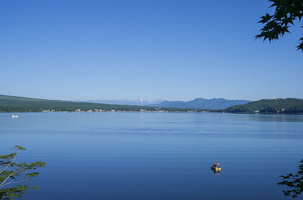

Fishing

MY HOBBY
ここでは、釣りで使われる道具、特にルアーフィッシングに使われるものについて書いていきます。釣りを行う上で最低限必要なものは、竿（ロッド）、リール、ルアーまたは餌です。ルアーを使った釣りは、スポーツ性、ゲーム性が高く比較的若い層に人気があります。

ロッド（竿）- PAGE1
リール - PAGE2

ルアー（疑似餌）- PAGE3
最終更新日 2021/1/29